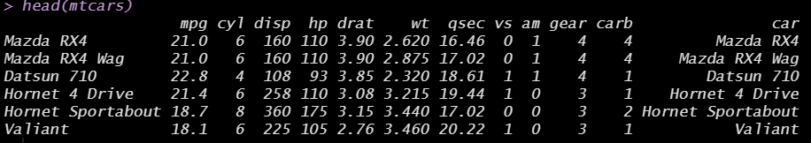

Chapter 3 Data Management
3.1 내장데이터 불러오기 Loading build-in data
R에는 누구나 사용가능한 내장 데이터들이 있습니다. 가장 대표적인 몇 가지 내장 데이터를 불러오는 방법을 알려 드리겠습니다. 이 데이터들은 실습 내내 종종 등장하므로 데이터가 어떻게 생겼는지, 어떤 변수들이 있는지 등에 익숙해 지시길 바랍니다.
먼저, data()를 통해 내장 데이터를 불러올 수 있습니다. 이 함수 안에는 데이터명을 기입해 주세요.
# most used built-in datasets: e.g. mtcars
data("mtcars")mtcars 데이터(Motor Trend Car Road Tests)는 1974년 Motor Trend US magazine에서 추출한 32종의 자동차의 여러 특성들을 담은 데이터입니다. 데이터 프레임은 32개의 케이스(행)과 11개의 변수(열)로 이뤄져 있습니다.
| 변수 | 의미 |
|---|---|
| mpg | Miles/(US) gallon |
| cyl | Number of cylinders |
| cyl | Displacement (cu.in.) |
| hp | Gross horsepower |
| drat | Rear axle ratio |
| wt | Weight (1000 lbs) |
| qsec | 1/4 mile time |
| vs | Engine (0 = V-shaped, 1 = straight) |
| am | ransmission (0 = automatic, 1 = manual) |
| gear | Number of forward gears |
| carb | Number of forward gears |
# 데이터가 어떻게 생겼는지 확인하는 방법:
# (1) head(): 데이터프레임의 상위 몇 개 행들을 출력
head(mtcars)
# (2) summary()
summary(mtcars)
# (3) tidyverse 패키지의 glimpse()
library(tidyverse)
glimpse(mtcars)패키지 내에 내장되어 있는 데이터들도 있습니다. 먼저 패키지를 설치한 후, library()를 통해 패키지를 사용가능하도록 불러옵니다. 그 다음은 똑같은 방식으로 data()를 통해 패키지 내장 데이터를 불러와 주세요. 저희는 gapminder라는 패키지를 설치하고, 내장 데이터인 gapminder를 불러와 볼게요.
# datasets within packages
# install.packages("gapminder")
library(gapminder)
data("gapminder")gapminder데이터프레임에는 총 여섯 개의 변수가 있습니다.
| 변수 | 의미 |
|---|---|
| country | 국가 |
| continent | 대륙 |
| year | 연도 |
| lifeExp | 기대수명 |
| pop | 총 인구 수 |
| gdpPercap | 1인당 국내총생산(단위: international dollars) |
# 데이터가 어떻게 생겼는지 확인해 보세요.
head(gapminder)
summary(gapminder) 3.2 데이터 저장하고 불러오기 Exporting and importing data
R에서는 데이터프레임을 SAS, SPSS, Stata, 그리고 csv 등 다양한 확장자를 지닌 데이터 파일로 내보내거나, 혹은 다양한 확장자를 지닌 데이터 파일을 R에 데이터프레임 형태로 불러올 수 있습니다. 데이터를 내보내고(export), 불러올(import) 때에는 haven패키지와 readr패키지를 대표적으로 사용합니다. 예시는 아래와 같습니다. 실습에서는 dta확장자를 지닌 Stata파일로 내보내고, 다시 그 파일을 R로 불러오는 연습을 함께 해보겠습니다.
# The easiest way to get haven is to install the whole tidyverse:
# install.packages("tidyverse")
# load "haven" package
library(haven)
# SAS
write_sas(mtcars, "mtcars.sas7bdat") # SAS 파일로 내보내기
read_sas("mtcars.sas7bdat") # SAS 파일을 불러오기
# SPSS
write_sav(mtcars, "mtcars.sav") # SPSS 파일로 내보내기
read_sav("mtcars.sav") # SPSS 파일을 불러오기
# Stata
write_dta(mtcars, "mtcars.dta")
read_dta("mtcars.dta")데이터를 불러왔는데 mtcars 내장 데이터(원본)와 조금 다릅니다. 내장 데이터에는 행의 이름(row names)이 각 자동차 종류였습니다. 즉, “자동차 종류”가 따로 변수로 있지 않았습니다.
# check row names
rownames(mtcars) 따라서 먼저 mtcars 원본 데이터에 “car”이라는 이름의 새로운 변수를 만들어 줍시다. 위에서 확인한 rownames(mtcars)를 mtcars데이터프레임의 새로운 변수 “car”로 할당을 해줍니다.
mtcars$car = rownames(mtcars)
head(mtcars) # check 
car 변수가 잘 생성됐음을 확인할 수 있습니다. 이렇게 car 변수를 새로 만들어준 mtcars데이터를 stata 파일로 내보낸 후, 다시 불러와 봅시다.
write_dta(mtcars, "mtcars.dta")
read_dta("mtcars.dta")read_dta() 함수를 통해 불러왔을 때 데이터가 console 창에 잘 뜨네요. 하지만 주의해야 할 점은 이 데이터는 console에 뜨기만 할 뿐, RStudio의 객체(object)로 저장된 것은 아니라는 점입니다. 따라서 객체에 따로 할당(assign)을 해주어야 합니다. new_mtcars라는 이름을 지닌 데이터로 할당을 해줍시다.
new_mtcars = read_dta("mtcars.dta")new_mtcars로 할당이 잘 되었다면, RStudio의 Environment 창에 잘 불러와 졌음을 확인할 수 있습니다.
이렇게 외부 확장자를 지닌 데이터를 불러올 때에는 새로운 객체로 저장을 해주셔야만, 이 데이터프레임을 사용할 수 있습니다.
데이터를 불러올 때 더 쉬운 방법은 file 창에서 불러오고 싶은 데이터를 클릭하고, Import Dataset 버튼을 클릭하여 불러오는 것입니다.
이렇게 쉽게 데이터를 불러오려면, 불러오고자 하는 데이터가 R 프로젝트 폴더 안에 들어 있어야겠죠? 프로젝트 관리의 중요성이 여기서 나옵니다. 동일한 프로젝트 폴더(디렉토리) 안에 모든 파일들을 넣고 관리하시길 바랍니다.
미리보기 창이 뜨고, 하단에 Code Preview가 뜹니다. library(haven)을 통해 haven 패키지를 로드한 후, read_dta() 함수를 통해서 데이터를 불러와 mtcars라는 객체로 저장해주는 코드입니다. 이 코드를 복사하여 R Script에 옮기거나, 우측 하단의 Import 버튼을 클릭하여 그대로 시행해 주시면 됩니다.
다음은 readr패키지를 사용하여 csv, 엑셀 파일 등을 불러오고 내보내는 연습을 해봅시다.
# load "readr" package
library(readr)
# CSV
write_csv(mtcars, "mtcars.csv") # mtcars 데이터프레임 객체를 mtcars.csv라는 이름의 csv 파일로 내보내라
new_mtcars2 <- read_csv("mtcars.csv") # mtcars.csv 파일을 R에 불러 들여와 new_mtcars2라는 이름의 데이터프레임으로 저장해라3.3 데이터 전처리 Data wrangling & pre-processing
분석하고자 하는 데이터를 불러온 다음에는 데이터가 어떻게 생겼는지를 파악하는 작업이 필요하며, 이와 관련해서는 3-1. 내장데이터 불러오기 파트에서 세 가지의 방법을 알려드렸습니다. 이번에는 mtcars만큼이나 유명한 내장데이터인 iris 데이터를 불러와 주세요.
# built-in data: "iris" 내장 데이터 불러오기
data("iris")
# 데이터가 어떻게 생겼는지 살펴봅니다.
summary(iris)
str(iris)
glimpse(iris) # tidyverse
# 범주형 변수의 경우, table() 함수를 통해 빈도를 확인합니다.
table(iris$Species)데이터가 어떻게 생겼는지 확인한 후에는, 분석에 용이한 형태로 원 데이터(raw data)를 가공하는 작업이 필요합니다. 이를 데이터 전처리(data pre-processing)이라고 합니다. R에서 기본으로 제공하는 base 함수들을 활용한 전처리를 먼저 배우고, tidyverse 패키지를 활용한 간편한 전처리를 배우도록 하겠습니다.
3.3.1 Indexing: 데이터프레임에서 원하는 행, 열 추출하기
3.3.1.1 Base syntax in R
기본 문법은 다음과 같습니다: 데이터프레임[ 행 , 열 ]. 먼저 관심 케이스(=행)을 추출하는 방법을 연습해 봅시다.
# iris 데이터에서 첫 번째 행을 추출하라
iris[1,]
# 첫 번째부터 다섯 번째까지의 행을 추출하라
iris[1:5, ] # : = ~
# 첫 번째, 세 번째, 다섯 번째 행을 추출하라
iris[c(1, 3, 5), ] # c() = combine()
# 조건부 추출: which() 함수 사용
# (1) Sepal.Length가 평균 미만인 행들을 추출하라
iris[which(iris$Sepal.Length < mean(iris$Sepal.Length)),]
# (2) Sepal.Width가 평균 이상인 행들을 추출하라
iris[which(iris$Sepal.Width >= mean(iris$Sepal.Width)),]
# (3) Species가 setosa인 행들을 추출하라
iris[which(iris$Species == "setosa"),]
# remark: = vs. ==
# 조건부 추출: subset() 사용
# (1) Sepal.Length가 평균 미만인 행들을 추출하라
subset(iris, iris$Sepal.Length < mean(iris$Sepal.Length))
# (2) Sepal.Width가 평균 이상인 행들을 추출하라
subset(iris, iris$Sepal.Width >= mean(iris$Sepal.Width))
# (3) Species가 setosa인 행들을 추출하라
subset(iris, iris$Species == "setosa") # Species가 setosa가 아닌 애들을 추출하고 싶다면?
iris[-which(iris$Species == "setosa"),]
subset(iris, iris$Species != "setosa")다음은 관심 변수(=열)를 추출하는 방법을 연습하겠습니다.
# iris 데이터에서 첫 번째 열을 추출하라
iris[,1]
# 첫 번째부터 다섯 번째까지의 열을 추출하라
iris[, 1:5]
# 첫 번째, 세 번째, 다섯 번째 열을 추출하라
iris[, c(1, 3, 5)]
# 변수명을 알고 있는 경우: Sepal 관련 변수들만 추출하라
iris[, c("Sepal.Length", "Sepal.Width")]
# subset() 함수를 사용할 수도 있습니다.
subset(iris, select=c(Sepal.Length, Sepal.Width))
# 만약 특정 변수만을 보고 싶다면: 데이터프레임$변수
iris$Species 데이터프레임에서 원하는 행과 열을 각각 indexing하여 추출하는 방법을 연습했습니다. 이번에는 행과 열을 동시에 indexing해봅시다.
# iris 데이터에서 첫 번째 행과 다섯 번째 열을 추출하라
iris[1,5]
# 첫 번째부터 다섯 번째까지의 행과 첫 번째와 다섯 번째 열을 추출하라
iris[1:5, c(1,5)]
# Species가 setosa인 행들의 Sepal 관련 변수들 + Speicies변수만 추출하라
iris[which(iris$Species=="setosa"), c("Sepal.Length", "Sepal.Width", "Species")]3.3.1.2 tidyverse
tidyverse패키지를 사용할 경우 base 함수를 사용하는 것보다 특정 조건을 갖는 행과 열을 더욱 효율적으로 추출할 수 있습니다. 행을 추출할 때에는 filter() 함수를, 열을 추출할 때에는 select() 함수를 사용합니다.
# iris 데이터에서 행 추출하기
# (1) Sepal.Length가 평균 미만인 행들을 추출하라
iris %>%
filter(Sepal.Length < mean(Sepal.Length))
# (2) Sepal.Width가 평균 이상인 행들을 추출하라
iris %>%
filter(Sepal.Width >= mean(Sepal.Width))
# (3) Species가 setosa인 행들을 추출하라
iris %>%
filter(Species == "setosa")
# 열 추출하기
# (1) Species 열만 추출하라
iris %>%
select(Species)
# (2) Sepal 관련 변수들만 추출하라
iris %>%
select(Sepal.Length, Sepal.Width)
# (3) Species 빼고 나머지 변수들을 다 추출하라
iris %>%
select(-Species)
# (4) Sepal 관련 변수들을 제외한 나머지를 다 추출하라
iris %>%
select(-c(Sepal.Length, Sepal.Width))
# Species가 setosa인 행들의 Sepal 관련 변수들 + Speicies변수만 추출하라
iris %>%
filter(Species=="setosa") %>%
select(Sepal.Length, Sepal.Width, Species)3.3.2 Preprocessing: 변수 전처리하기
3.3.2.1 Base syntax in R
데이터는 palmerpenguins패키지 내장 데이터인 penguins 데이터를 사용하겠습니다.
(1) 결측치 처리
library(palmerpenguins)
data("penguins")
summary(penguins)
# 먼저 base R syntax 를 사용해서 결측치 처리를 해봅니다.
# 어디에 결측치가 있을까? 확인
colSums(is.na(penguins)) # column 별로 sum 계산
penguins[which(is.na(penguins$bill_depth_mm)),] # 구체적으로 확인해보자
penguins[which(is.na(penguins$sex)),]
# sex 변수에서 결측치를 가진 케이스를 모두 제거하고 새로운 데이터로 저장해 봅니다.
penguins_new = penguins[-which(is.na(penguins$sex)),]
summary(penguins_new) # 확인
# 더 쉬운 방법: na.omit()
na.omit(penguins)
# 참고) 새로운 데이터로 저장해주셔야 업데이트 됩니다. (2) 새 변수 만들기 펭귄들의 부리(bill)의 length와 depth를 곱해서 면적(area) 변수를 새로 만들어 봅시다.

# Base R syntax:
penguins_new$bill_area_mm <- penguins_new$bill_depth_mm * penguins_new$bill_length_mm펭귄들의 body mass는 현재 gram 단위로 되어 있습니다. 이를 kg 단위로 바꿔 새로운 변수로 저장해 주세요.
# Base R syntax:
penguins_new$bill_area_mm <-
penguins_new$bill_depth_mm*penguins_new$bill_length_mm(3) 변수 범주화(categorizing; grouping) 연속형 변수를 범주화해봅시다. 펭귄들의 body_mass_kg 변수의 분포를 살펴보세요. 중위값 이하의 경우 0의 값을, 중위값 초과의 경우 1의 값을 갖는 이항 변수로 범주화해주세요.
# 분포 확인
summary(penguins_new$body_mass_kg)
quantile(penguins_new$body_mass_kg)
# recoding
penguins_new$body_mass_kg[penguins_new$body_mass_kg <= 4.050] = "중위값 이하"
penguins_new$body_mass_kg[penguins_new$body_mass_kg > 4.050] = "중위값 초과"
# check
table(penguins_new$body_mass_kg)이런 방식의 재부호화는 기존 변수 위에다 특정 조건에 부합하는 경우에만 특정 값을 덮어쓴다는 점에서 추천드리지 않습니다. 항상 전처리를 하실 때에는 원래 변수를 그래도 놔둔 채로 새로운 변수를 만들어 사용하는 편이 좋습니다. 하지만 base 함수를 이용하는 경우, 그 방식이 매우 복잡해 집니다. 일단 빈 깡통(벡터)을 하나 만들어 두고, 이 빈 깡통에 if else 구문을 사용하여 값을 하나씩 채워 넣습니다. 이후 값이 모두 채워진 벡터를 데이터의 새 변수로 붙여 쓰면 됩니다. 코드는 아래와 같습니다. 단, 이 코드를 이해하기 위해선 for 구문(loop), if else 구문 등의 함수 기능을 공부하셔야 하므로 참고만 해주시길 바랍니다.
body_mass_group = c() # 빈 깡통 만들기
# for 구문 + if else 구문 혼합하여 빈 깡통에 값 채워넣기
for(i in 1:nrow(penguins_new)){
if(penguins_new$body_mass_kg [i] <= 4.050){
body_mass_group[i] = "중위값 이하"
}else{
body_mass_group[i] = "중위값 초과"
}}
penguins_new$body_mass_group = body_mass_group # 값이 채워진 벡터를 새로운 변수로 할당
# 확인
table(penguins_new$body_mass_group) 3.3.2.2 Tidyverse
이제까지 (1) 결측치 처리, (2) 새 변수 만들기, 그리고 (3) 범주화를 R의 base syntax 만으로 해보았습니다. 이렇게 어떤 패키지를 불러오지 않더라도 base 함수만으로도 분석이 가능하긴 합니다만, 더 효율적이고 쉬운 방법이 있습니다. Tidyverse를 사용하여 동일한 분석을 한번에 진행해 보겠습니다. 이 패키지의 가장 큰 장점은 %>% (pipe operator; |> 도 가능)을 통한 연속적이고 효율적인 코딩입니다. Tidyverse문법에서는 변수 전처리를 할 때 mutate() 를 사용해 줍니다. 또한 ’빈 깡통을 만들고 → for loop, if else 구문을 조합하여 값을 채워 넣고 → 값을 채운 벡터를 새로운 변수로 할당’하는 과정을 더 단순화해주는 ifelse() 함수도 Tidyverse 를 사용하는 큰 이유 중 하나입니다.
# Tidyverse
penguins %>% # 분석 대상이 되는 데이터
drop_na() %>% # 결측치 처리
mutate(bill_area_mm = bill_depth_mm*bill_length_mm, # 부리 면적 변수 생성
body_mass_kg = body_mass_g/1000, # 무게 kg 단위로 바꾼 변수 생성
body_mass_group = ifelse(body_mass_kg > median(body_mass_kg), "중위값 초과", "중위값 이하")
) -> penguins_new_tidy # 새 데이터로 저장
# 확인
table(penguins_new_tidy$body_mass_group)(보너스) tidyverse - group_by()
# 대륙 별 변수 평균 요약하기: summarise(), mean()
gapminder %>%
group_by(continent) %>% # 대륙 별로 묶어서
summarise(
lifeExp_mean = mean(lifeExp), # 평균 값들을 요약해라
pop_mean = mean(pop),
gdpPercap_mean = mean(gdpPercap)
)
# 연도 별
gapminder %>%
group_by(year) %>% # 연도 별로 묶어서
summarise(
lifeExp_mean = mean(lifeExp), # 평균 값들을 요약해라
pop_mean = mean(pop),
gdpPercap_mean = mean(gdpPercap)
)
# 대륙 X 연도 별 변수 평균 구한 변수를 새로운 변수로 추가하기: mutate()
gapminder %>%
group_by(continent, year) %>%
mutate(
lifeExp_mean = mean(lifeExp),
pop_mean = mean(pop),
gdpPercap_mean = mean(gdpPercap)
) -> test
# 확인
glimpse(test)